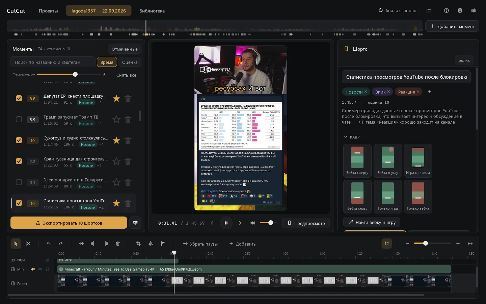
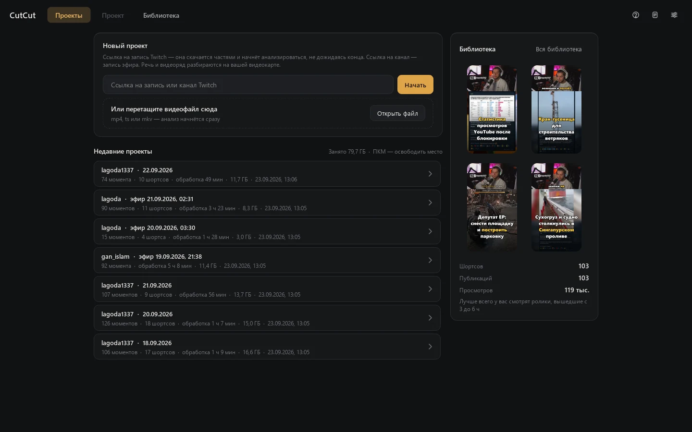
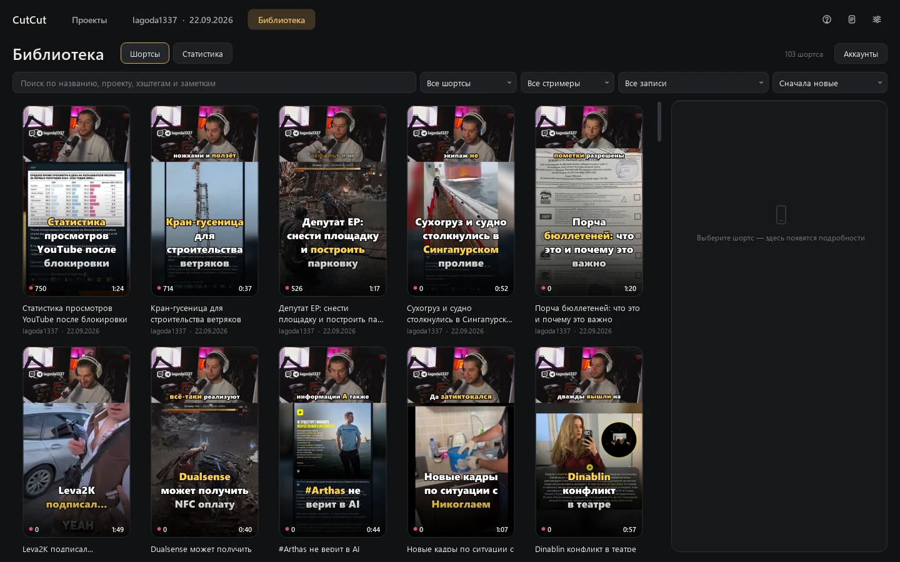
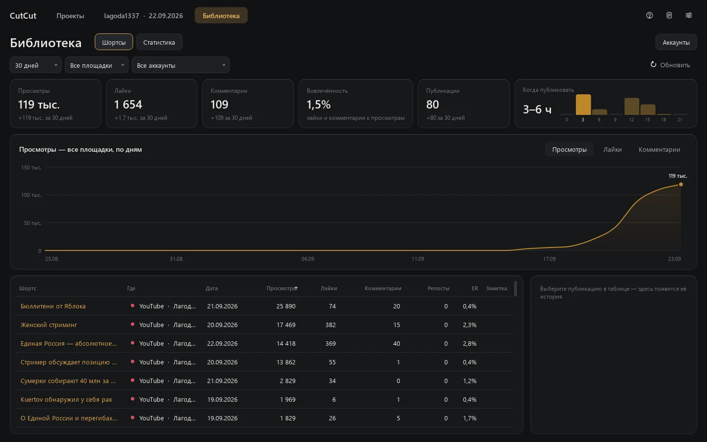
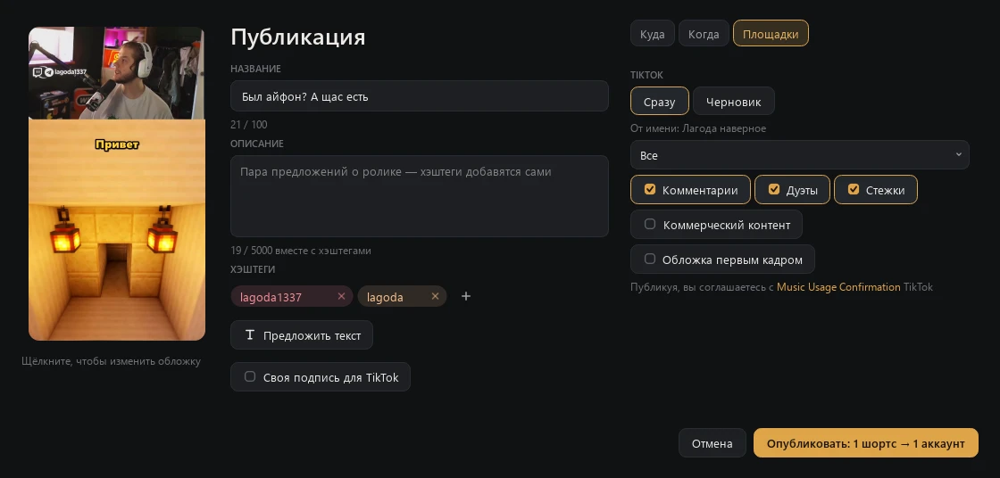

CutCut
A Windows desktop app that finds the best moments of a long Twitch stream and turns them into vertical shorts with word-by-word subtitles — then publishes them to your TikTok and YouTube accounts.

Features
From a link to moments
Paste a link to a Twitch recording or channel, or drop a video file. Recordings download in parts, and the analysis starts before the download finishes. Live streams of channels you follow can be recorded automatically.
Moment search on your computer
Speech recognition, on-screen analysis, loudness, laughter and shouts, chat spikes and viewer clips point to the interesting parts; a local language model picks and ranks them. Video never leaves your computer.
Vertical 9:16 layout
CutCut finds the webcam and the game on screen and stacks them for a phone screen. Layout templates, rounded or circular webcam, blurred background, per-channel presets.
Karaoke subtitles
Word-by-word subtitles from an accurate transcription of each clip, with styles, highlight colors, speaker detection and manual editing right on the timeline.
Timeline editor
Split, trim and speed up pieces, remove pauses in one click, add text, images, video and music with automatic ducking under speech, animate layers with keyframes.
Library and statistics
Every exported short in one library with covers and notes. Views, likes and comments over time, retention of YouTube shorts and the hours when your videos do best.
Screens



Publishing to TikTok

You connect your TikTok account in Library → Accounts: CutCut opens TikTok's own login page in your browser, so it never sees your password. Then, for each short you choose to publish:
- You edit the title, description and hashtags, and pick the cover.
- You choose Post now or Draft. A draft goes to your TikTok inbox, and you finish it in the TikTok app.
- For a direct post, CutCut shows which account it posts as and asks who can view the video. The options come from your account's settings, and none is preselected.
- You allow or turn off comments, duets and stitches. What your account has disabled stays disabled.
- If the video promotes you or a partner, you mark it as commercial content: Your brand or Branded content.
- You see the consent to TikTok's Music Usage Confirmation (and Branded Content Policy for branded content) and press Publish. Nothing is posted without this click.
- CutCut uploads the video, shows the progress and the status, and later adds the video's views, likes, comments and shares to the statistics.
What CutCut does with each permission:
user.info.basic: shows your display name and avatar in the list of connected accounts;video.upload: sends a short you chose to your TikTok inbox as a draft;video.publish: posts a short you chose with the caption and settings you picked;video.list: reads your videos' view, like, comment and share counts for the statistics of shorts published from CutCut.
Details are in the Privacy Policy.
The interface is in Russian — what the labels mean
| Публикация | Publish |
| Куда · Когда · Площадки | Where · When · Platforms |
| Сразу · Черновик | Post now · Draft (to TikTok inbox) |
| От имени | Posting as |
| Все · Друзья — взаимные подписки · Подписчики · Только я | Everyone · Friends · Followers · Only me |
| Комментарии · Дуэты · Стежки | Comments · Duets · Stitches |
| Коммерческий контент · Мой бренд · Реклама партнёра | Commercial content · Your brand · Branded content |
| Обложка первым кадром | Cover as the first frame |
| Опубликовать | Publish |
| Аккаунты · Добавить аккаунт · Удалить | Accounts · Add account · Remove |
Publishing to YouTube
Connect a channel with your Google account and publish shorts right away or at a set time: YouTube keeps a scheduled video private until then. CutCut reads the statistics of the videos it published, and retention if you allow YouTube Analytics.
Download
CutCut 0.1.3 for Windows
The installer sets up everything CutCut needs: Python, ffmpeg, the local model runtime and the speech and vision models. It downloads about 20 GB during installation.
System requirements
- Windows 10 or 11, 64-bit.
- NVIDIA graphics card with 6 GB of video memory or more; 16 GB is recommended.
- About 25 GB of disk space for the app and models, plus 10–16 GB for each 4-hour stream.
- Internet connection for the installation, downloads and publishing.
Questions
- Is CutCut free?
- Yes. CutCut is free and runs entirely on your computer.
- Are my streams or videos uploaded anywhere?
- Only the shorts you publish, and only to the account you choose. Analysis runs locally; CutCut has no servers.
- Can CutCut post without me?
- No. Every publication starts with your click in the publish window. A TikTok post scheduled for later is published by CutCut at that time, so the app has to be running.
- What languages does it support?
- The interface is in Russian. Moment search and subtitles are tuned for Russian-language streams.
- How do I disconnect my TikTok account?
- In Library → Accounts press Remove next to the account: its tokens are deleted from your computer. You can also revoke access in TikTok under Settings and privacy → Security → Manage app permissions.